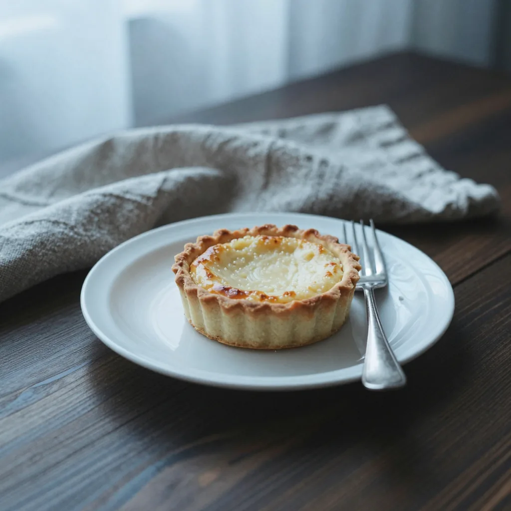
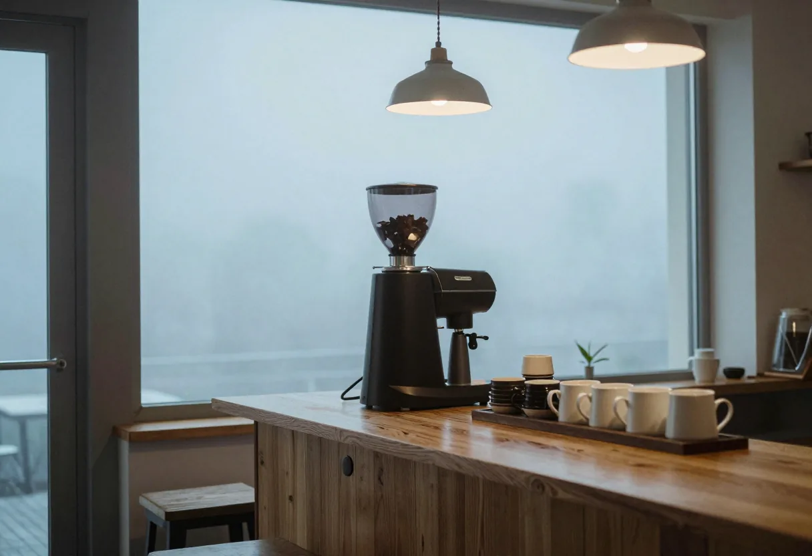

季節のタルト
香ばしく焼いた生地に、季節の果実とやさしいクリームを。
¥520（仮）
Vol.01
霧の朝号
2026 Autumn
01 / 06
霧の深い朝だけ、扉をあける。
湯を沸かし、豆を挽き、
窓の外が白くなるのを待つ。
霧がはれるまでの、ほんのひととき。
そのあいだだけの、小さな珈琲店です。

02 / 06
雨でも晴れでもなく、霧の朝がいちばん静かだと思う。音がやわらかくなって、湯気がよく見える。
そんな朝の気配を、一杯の珈琲と一切れの焼き菓子に託して。急がず、読むように味わってもらえたら。
霧が晴れるまでの、
約四十分。
03 / 06

香ばしく焼いた生地に、季節の果実とやさしいクリームを。
¥520（仮）
霧の朝にあわせて、毎朝焙煎度を少しだけ変える一杯。
¥600（仮）
日持ちのする小さな焼き菓子を、箱に。霧の朝の、おみやげに。
¥1,200（仮）
04 / 06